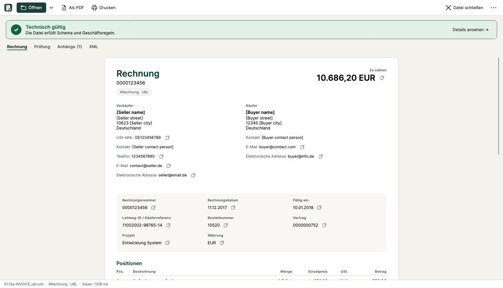

E-Rechnung Viewer & Prüfer
XRechnung (UBL und CII) und ZUGFeRD/Factur-X lesbar anzeigen und nach den offiziellen Prüfregeln der KoSIT (EN 16931, XRechnung 3.0) technisch prüfen. Komplett offline, ohne Konto, ohne Cloud, ohne Telemetrie. Einmalkauf, kein Abo.

Funktionen
- Rechnung übersichtlich wie auf Papier: Absender, Empfänger, Positionen, Umsatzsteuer, Summen, Leitweg-ID
- IBAN, Betrag, Verwendungszweck mit einem Klick kopieren, GiroCode für die Banking-App
- Prüfbericht in Klartext mit Regelnummer – gleiche Ergebnisse wie der KoSIT-Validator
- Ansicht als PDF speichern und drucken, eingebettete Anhänge speichern
- Deutsch und Englisch, helles und dunkles Design
Keine Steuer- oder Rechtsberatung. Die App zeigt an und prüft technisch.
Support
Fragen oder Probleme? Schreiben Sie uns eine E-Mail (Adresse im Impressum). Bitte senden Sie Rechnungen nur, wenn es nötig ist, und schwärzen Sie personenbezogene Daten.
E-Invoice Viewer & Validator
View XRechnung (UBL and CII) and ZUGFeRD/Factur-X e-invoices in a readable layout and check them against the official KoSIT rules (EN 16931, XRechnung 3.0). Fully offline, no account, no cloud, no telemetry. One-time purchase.
No tax or legal advice. The app displays and checks invoices technically.
Support: email address in the legal notice. Privacy policy